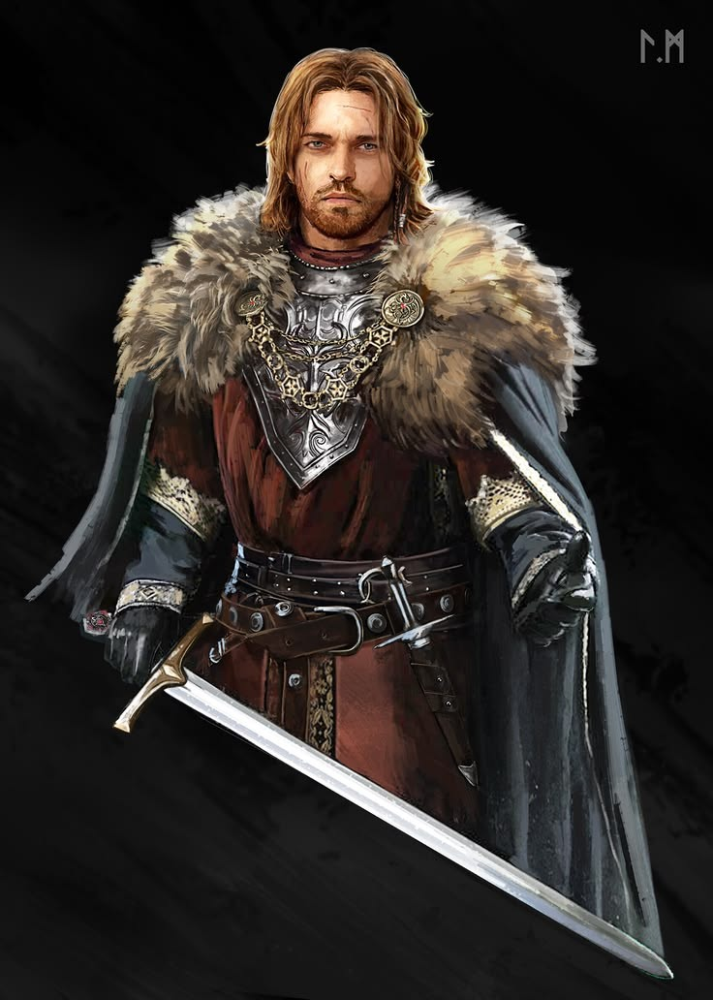

| Mark Stark | the Boy Who Kept Hold Kharven, House Stark of Hollenmark as of the Tenrai keep at Kharven-Seat, the night he sat beside his brother’s body under a Stark cloak |
| Epithet | the Boy Who Kept Hold the Lanternless gave it to him on the Vessant road and still ask how big the cub was; the Stark riders, less kindly, know him by his breastplate, the Good Platter |
| Concept | Whatever has hold of him, his hand won’t open. |
| Stat line | Stage III Ascension · Journeyman (Clouded) Level 90 · Refined · unclassed until Glory Body II Mastered, unread · Fate I Walked 30%, unread · Lenses: none on file, the Stark cold in their place yield (η) 0.35 |
| Combat grammar | Blade and shield; the short sword and the round limewood shield on the road, his brother’s long northern sword since the Seat |
| Aura and sound | the Stark cold, thin and bright, a pale gray with a coppery shimmer at its edge like frost on a rust-red leaf sound: a man talking under his breath, steady and fast, and then stopping |
| How he moves | tall, lean and quick, the shield up and the blade low, the way a northern yard taught him and Rob both; he gives ground talking, on fast feet, and when a thing is on him he stops giving it and goes down inside its reach, onto his knees, shuffling in under the foreleg or the arm with the point leading and his whole weight behind the pommel; the long sword is still carried low and wide of the body, a short-sword man’s hand on a blade he has not finished getting used to; the left forearm is a knotted seam and does the shield’s work badly; hurt, he screams, cries and complains the whole time, and the hand stays shut |
| Stack | sustainable at his means: Dexterity 52.5, Vitality 41, Resilience 36 cap two steps on the hidden scale over the sustainable figure layers: KEPT HOLD’s one step of Fortitude on the hidden scale while he grips; no release, no vow |
| Kit | a gray-brown wolf mantle over a gray-blue cloak, an oxblood tunic with pale gold at the cuffs, brass badges on a gilt chain, his dead brother’s long sword held low, and the piece people talk about first: a Rare breastplate with a great deal more etching on it than proof |
| Voice | ”That was the small one, Sarge. That was the cub.” speaker type: the youngest Stark brother, who talks when he is frightened and has been frightened a great deal |
| Field | Value |
|---|---|
| Full Name | Mark Stark |
| Pronunciation | MARK STARK |
| Age | Thirty-eight |
| Family | Ulf Stark, his father Rob and Lorn, his brothers |
| Realm / Faction | House Stark; two winters a soldier of the Lanternless free company in Halcrest under Sergeant Muken, beside his brother Rob; then a Stark rider at the Foot, the Skeldmere and the Seat |
| Refusal | He will not let go of the sword, whatever has hold of him |
| Conviction | He tried. He would like somebody to tell him that counts |
| Field | Value |
|---|---|
| Level | 90; it holds Ascension (15), and no Residual Strain builds in him short of 100 |
| Mastery | unread on Body and Fate, below Glory, and no grip by blood or blessing to open either early |
| Primary | Total |
|---|---|
| Vitality | 330 |
| Ardency | 190 |
| Gnosis | 60 |
| Dexterity | 420 |
| Harmonics | 40 |
| Resilience | 290 |
| Tempering | 150 |
| Dominion | 200 |
| Field | Value |
|---|---|
| Pool | 1,680, all spent |
| Measure | Figure |
|---|---|
| EU Reserve | 37,435 EU |
| Flux Density | 3,000 EU/g |
| AU/s | 1,050 · empties in 35.7 seconds at full output |
| Field | Value |
|---|---|
| Peaks | Grapple and Fortitude, a boy who will not be put down; Reflex; Tolerance for pain he complains about the whole time |
Traits
Full accounts: Mark Stark — Abilities
Below Glory his Mastery is unread, and every Trait works at its base.
| Trait | Kind | Source | Path and Form | Gates | What it does | Limit | Tell | Cost | Counter | Numbers |
|---|---|---|---|---|---|---|---|---|---|---|
| KEPT HOLD | Primary | — | — | — | While he grips a weapon, nothing short of breaking the hand takes it from him, and he is a step harder to put down for as long as he holds on. | It holds the sword, not the man. He can be knocked down holding it, dragged holding it, shaken like a rat holding it, and a thing a step or two stronger than he is simply throws man and sword together. | The knuckles of the sword hand go white on the hilt and stay white. | Nothing, because nothing is being made or thrown; it is a law his Shell (the body-side layer of the soul) keeps without being asked. | It follows from how a hand is built: take the hand, not the blade (take the hand, not the sword). Break the fingers, cut the cords in the forearm, or fold the wrist hard down toward the palm, which slackens those cords so that even a locked fist has nothing left to pull with. | No reserve; Fortitude one step high on the hidden scale while he grips |
| THAT WAS THE SMALL ONE | Secondary | — | — | — | He talks when he’s frightened, a steady stream of it under his breath, and while he’s talking, fear can’t reach his hands. | The talking: the fear is held off, never spent, and the moment the words stop, everything he has been holding off arrives at once, the shakes, the scream, the tears. | A steady stream of words under his breath. | Nothing in reserve; the moment he stops talking, everything he has been holding off arrives at once. | Make him stop: wind him, strike the throat or the jaw, or say the one thing he cannot answer. | — |
| STARK RIME | Inherited | — | — | — | The Stark cold, thin in him yet: frost on the fur of his collar when he’s angry or afraid, and it goes into the wound along the blade. | The cold moves heat and cannot make any, so on ground already frozen hard it has little to take, and against a real fire it is a bucket against a furnace. | Frost on the fur at his collar; frost creeping white up the fuller from the wound; his breath stops steaming. | — | Heat, and calm: a Stark who is not angry or afraid is only a cold man. | — |
Skills and Abilities
Full accounts: Mark Stark — Abilities
Skills
| Skill | Cues / mechanics | Learned where | Priced by (Sub-Stats) | Rank |
|---|---|---|---|---|
| Sword and Shield | shield up, short blade low, thrust from under the rim; now relearning it on a long sword wound for a bigger hand | a northern yard, a long time ago, beside Rob | Reflex, Finesse | Initiate |
| Getting Under | the drop to the knees inside the reach, the point behind the foreleg or under the arm, the whole weight on the pommel | the Vessant road, under a cub | Grapple, Fortitude | Initiate |
| Riding | a Stark rider’s seat; he brought the news off the Skeldmere on a lame bay with an arrow in his arm | Hollenmark, and two winters of roads | Economy | Initiate |
Techniques
| Technique | Kind | Mark | Source | Path and Form | Gates | What it does | Limit | Tell | Cost | Counter | Numbers |
|---|---|---|---|---|---|---|---|---|---|---|---|
| KEPT HOLD | Trait-art | — | — | Path Body · Lens the Stark cold, the house’s inheritance (no Wellspring) · Form Strike | none written | Whatever has hold of him, his hand won’t open. | — | — | — | — | Sound: frost tightening on iron |
| UNDER AND HOLD ON! | Signature Technique; Move of KEPT HOLD | Drilled | Lived | — | — | Down on his knees inside your reach, the blade up behind the foreleg or under the arm to the hilt, and he stays there, sobbing if he has to, until it’s over. | He has to be under the thing to do it, and being under the thing is how he got his arm torn open. | He stops giving ground, the muttering quickens, and he goes to his knees inside the reach. | about 5% of reserve to set the rime through the arm and hold, near 1,900 EU of 37,435 | Don’t let him get underneath you: keep him at the long end of a spear, stay off him once he is down, or be something with no belly to get under. | yield (η): 0.35 · AU/s: 1,050 |
Voice
| Field | Value |
|---|---|
| Speaker type | the youngest Stark brother |
| Notices first | where his brother is |
| Sentence length | in pieces when frightened; plain and quick otherwise |
| Contractions | always |
| Pet word | ”Sarge” |
| Grief shift | he goes quiet, which nobody who knows him has heard before |
| Sample line | ”I tried. I’m sorry. I tried.” |
Physical Description
| Feature | Description |
|---|---|
| Build | He is tall and lean, built quicker than his brothers and not yet as broad. |
| Hair, beard, face and eyes | His hair is a coppery gold going to rust, long and loose to the shoulders and pushed back off his brow; he wears a short red beard now, trimmed close along the jaw, and under it the face is still the freckled one the company knew, long and straight-nosed, with pale blue Stark eyes. |
| Marks and scars | The cub’s claws left a thin pale scar down his left cheek from the brow, and his left forearm under the glove is a long knotted seam where it was torn to the bone. |
| Dress and how the sword is carried | He wears a heavy gray-brown wolf-fur mantle over a dark gray-blue cloak, pinned at the shoulders with two round brass Stark badges joined by a gilt chain across a worked steel breastplate; under it a long tunic of deep oxblood red, embroidered at the cuffs in pale gold, black gloves, and a broad belt of dark leather hung with rings and a long dagger. |
Equipment
| Item | What it is | Grade | Rarity | Rung | Bonded |
|---|---|---|---|---|---|
| The etched breastplate | steel gorget and long pointed breastplate | E | Rare | Sidearm | no |
| The badges and the gilt chain | two round Stark badges joined across the breastplate by a doubled chain | plain | Uncommon | — | — |
| Rob’s long sword | long northern sword off his brother’s doubled belt | plain | Common | — | no |
| The long dagger that was a short sword | the Vessant road short sword, cut down and reground | plain | Common | — | no |
| The oxblood tunic, the mantle and the cloak | long tunic of deep oxblood wool, heavy gray-brown wolf-fur mantle, dark gray-blue cloak | plain | Uncommon | — | — |
| The small pieces | belts, gloves, a silver bead, a garnet cuff disc, a limewood shield | plain | Common, except the cuff disc, which is Uncommon | — | — |
| Item | Look | Maker’s mark | Stamp | What people say | How shown off | Details |
|---|---|---|---|---|---|---|
| The etched breastplate | bright steel studded at the throat, its whole face raised in whorls like frost on a window, the point coming down toward the belly the cub’s back claws tore at on the Vessant road, when the mail shirt saved him and the links flew off it like coins; he ordered it up from a Halcrest armorer through the Vessant factor the first week his arm could hold a purse | proof-mark a small Guild stamp inside the left arm, Halcrest work | stamp Marked | the Stark riders call it the Good Platter and ask him what’s for supper | the mantle is pinned wide to leave it bare | steel gorget and long pointed breastplate, chased all over in curling northern scrolls thirty gold of chasing on five gold of steel, and he knows it, and he will tell you what it cost inside a minute, because he is frightened or because you are standing there one real dent low on the left, from the Skeldmere, that he will not let anyone beat out |
| The badges and the gilt chain | brass, cut with northern knotwork around one red glass bead apiece; the chain is cast links under a wash of gilt, rubbed pink already at the high points | — | — | a man in the Foot’s yard asked if that was gold and Mark said yes, and Rob, from the far side of the yard, said no; he has stopped answering that one | he polishes them | his father wears the one real badge, in silver |
| Rob’s long sword | a Halcrest market blade, bright and long and unfullered, with a cast brass guard swept toward the point under a little gilt that has already gone from the inner edge, so that it looks a great deal better than it is, which Rob never once noticed | — | — | he took it off the belt in the Hall square before anyone said he could, and would not have given it up for the king | he doesn’t yet; he carries it low and away from the body, the way you carry something that belongs to somebody, and KEPT HOLD has already set his knuckles on it | about a kilogram and a half, balanced well out for a man raised on a short sword no proof-mark cuts cloth, hide and a bad mail shirt, fails against plate and anything worked the grip is still wound for a bigger hand and he has not rewrapped it |
| The long dagger that was a short sword | a trooper’s plain steel, straight cross, leather grip dark with old sweat, in a plain sheath with an iron tip on the belt; the same blade he held behind the cub’s foreleg to the hilt, nicked so badly in the last hand of its length that any sensible man would have sold it, so he had the end cut off | — | — | the Lanternless still ask to see it and ask how big the cub was, and he tells them | he touches the pommel when he mutters and does not know he does | about six hundred grams, balanced at the guard no proof-mark a thrust for the gap under an arm, fails against plate |
| The oxblood tunic, the mantle and the cloak | the loudest color any son of Ulf Stark has put on, the cuffs worked in pale gold, a panel of black and gold braid hanging down the front below the belt; the mantle shaggy and pale at the tips and doing the shoulders he does not have yet; the cloak edged in a line of white, its hem still dark from the Seat | — | — | Ulf looked at the red once and called it an arrow-mark, and Mark has since had an arrow in him, in the arm, and kept the red | — | — |
| The small pieces | the left glove is a size larger than the right, to go over the knotted seam of the forearm | — | — | — | — | doubled dark belts hung with steel rings, black gloves, a silver bead on a thin braid at the temple, a garnet disc in silver stitched to the right cuff, a round limewood shield at the saddle the shield is his third, the first having gone the way of his arm, and the bare rings on the belt are for gear he has not bought yet |
Lore
Full account: Mark Stark — Lore
Ties
| Person | Who they are to him |
|---|---|
| Rob Stark | his brother |
| Lorn Stark | his brother |
| Ulf Stark | his father |
| Muken Moto | the Sarge |
| Yukazuri Moto | whom he tried to keep |
| the boy with the red ears | who was there when Rob fell |